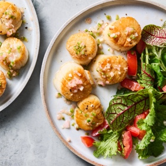

← All recipes
Seared Scallops with Tomato Salad

Servings: 2 servings · Prep: 10 min · Cook: 20 min
Ingredients
- 2 ripe Roma tomatoes, quartered and thinly sliced
- Salt
- 2 tablespoons red wine vinegar
- 1 tablespoon finely minced shallots
- 1 tablespoon finely minced jalapeño
- 1/2 teaspoon soy sauce
- Mild oil, such as canola, vegetable or grapeseed
- 1/2 pound large dry sea scallops, tough side muscles removed
- 4 cups loosely packed spring mix or arugula
Directions
- In a colander or sieve placed over a mixing bowl, toss the tomatoes with a pinch of salt and set aside to drain, about 30 minutes. Discard the liquid. Or, keep it and add a splash of it to a martini later.
- To a small jar with a lid, add the vinegar, shallots, jalapeño, soy sauce and a pinch of salt. Set aside to mellow out, at least 10 minutes and up to 30 minutes. Add 2 tablespoons of oil, seal the jar and shake well to combine. Set aside until ready to dress the salad.
- Pat the scallops dry and season with salt. Heat a large skillet over medium-high until hot. Add enough oil to lightly coat the bottom. When a wisp of smoke rises, place the scallops where the oil has pooled. Cook, without touching, until deeply golden brown on the bottoms, 2 to 3 minutes. Reduce the heat if needed. Flip and cook the second sides briefly until lightly golden, 30 seconds to 1 minute. Transfer the scallops to a plate and drizzle with some of the vinaigrette.
- In a mixing bowl, toss the tomatoes and spring mix with 1 tablespoon of the reserved vinaigrette. Taste and add more salt and vinaigrette as desired. Divide the salad among serving plates, piled high, and top with the scallops. Any leftover vinaigrette keeps in the refrigerator for up to a week.
Original source: cooking.nytimes.com